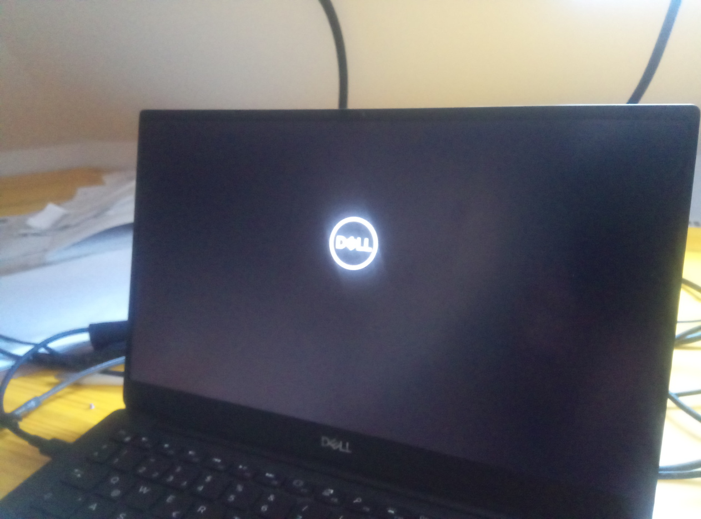

How to Brick a €1399 Dell XPS 13#
What Happened?#
So I appear to have bricked my XPS 13. Issue still unresolved; still I’m a little upset (to say the least) that this is possible altogether. Current tendency is to point finger at firmware vendors/EFI implementors.
The original intention of this post was to shine some light of my own onto Secure Boot, Shim, and module signing, rather than reproduce what’s there. I got stuck in the middle though, with a bricked €1399 Dell XPS 13, so the focus has changed a little.
I’ll start with what I did, where I got, and continue to describe what the symptoms are.
VirtualBox, Fedora, and Secure Boot#
VirtualBox comes with kernel modules of its own, consequentially those are not signed with the Fedora key, and fail to load without further action. Turning off Secure Boot is an option, but another option [1] is to sign the VirtualBox modules with my own key - a so-called machine owner key (MOK) [2].
Enrolling Machine Owner Key (MOK)#
Not being an expert in cryptography and key management, and not in UEFI either, what I understand is that the Shim bootloader lets us boot non-Microsoft OSen.
It provides a link in the chain of trust between UEFI secure boot and the software that comes after it: the GRUB bootloader, the Linux kernel image, and Linux kernel modules that are loaded after the kernel has started. See here for much more detail.
It’s the Linux distribution that is usually responsible to make those complicated parts play together, and to sign the artifacts involved. However, if you want to load third party kernel modules (like VirtualBox’s for example), then you have to
Create your own key: the “Machine Owner Key” (MOK)
Register (enroll) it with Shim. It’s the kernel that picks up Shim’s keys later, and uses those to verify module signatures as modules get loaded.
Generate Key Pair#
$ mkdir MOK/
$ openssl \
req \
-nodes \
-new \
-x509 \
-newkey \
rsa:2048 \
-keyout MOK/jfasch-xps13-mok.priv \
-outform DER \
-out MOK/jfasch-xps13-mok.der \
-days 36500 \
-subj "/CN=jfasch/"
That was simple. Actually,
-nodesleaves the key with an empty passphrase; you might want to change that.-days 36500(expiry) appears a bit long to me.
Btw., you view the created certificate, MOK/jfasch-xps13-mok.der,
like so,
$ openssl x509 -in MOK/jfasch-xps13-mok.der -inform der -text
Certificate:
Data:
Version: 3 (0x2)
Serial Number:
01:16:97:e5:ef:55:37:88:3a:10:29:5b:e5:b3:9c:05:1b:a4:b3:d7
Signature Algorithm: sha256WithRSAEncryption
Issuer: CN = jfasch
Validity
Not Before: Sep 7 12:57:56 2021 GMT
Not After : Aug 14 12:57:56 2121 GMT
Subject: CN = jfasch
Subject Public Key Info:
Public Key Algorithm: rsaEncryption
RSA Public-Key: (2048 bit)
Modulus:
00:b5:2d:5c:ea:6f:66:b0:d7:95:f6:9e:55:67:34:
c4:c7:e9:05:c3:9d:0d:71:bc:e9:1b:f5:50:6e:e9:
95:fe:58:be:f6:99:94:2b:e6:b2:af:59:a0:69:78:
f8:7d:1c:2c:03:9f:07:26:f6:62:4d:86:e3:dd:7b:
12:3f:84:c4:99:bd:aa:30:b8:a5:19:23:69:1f:95:
13:d5:0b:ee:fd:81:69:d1:e3:e8:dc:c5:d2:f3:c2:
71:0a:08:db:a1:48:e1:89:5b:1c:6d:4c:16:03:4a:
08:69:77:c4:3f:bd:a9:52:3d:c5:68:b6:f8:c3:a0:
a8:9b:e1:e6:31:9c:0b:e3:6d:d8:dd:2d:d7:7f:ad:
bf:14:10:54:e2:ac:a3:79:69:b8:a0:64:3a:28:ad:
38:a4:f4:96:35:57:63:82:ba:2e:73:41:4f:1d:28:
6e:15:a4:7e:26:4e:43:fe:9d:bd:ca:81:0e:d9:4f:
9c:8c:6f:c7:04:d9:ff:de:4e:d3:29:44:c7:c8:f7:
8c:7f:ec:8e:6d:52:aa:db:49:82:c8:4a:d8:9c:4f:
ea:c5:d6:45:ba:fb:3b:99:54:c5:b2:a3:0f:5c:63:
35:9c:e6:b6:ab:ca:cd:1e:5c:6d:ef:4b:e8:72:8e:
5e:ef:03:16:b6:dd:10:7e:5f:22:2e:ce:dc:50:52:
7c:51
Exponent: 65537 (0x10001)
X509v3 extensions:
X509v3 Subject Key Identifier:
0A:3F:52:51:DC:75:22:8E:5E:28:4C:15:98:BC:D8:0C:0D:9D:48:77
X509v3 Authority Key Identifier:
keyid:0A:3F:52:51:DC:75:22:8E:5E:28:4C:15:98:BC:D8:0C:0D:9D:48:77
X509v3 Basic Constraints: critical
CA:TRUE
Signature Algorithm: sha256WithRSAEncryption
39:c8:a1:39:1b:27:c0:1f:8f:51:b1:b7:69:a0:12:81:af:9a:
ef:d2:1c:fa:f7:7a:4b:24:9d:36:30:df:47:a6:b5:12:32:06:
d8:80:3b:a3:c9:7e:a8:76:a6:d9:71:f0:07:f0:a3:b4:f9:7a:
c0:88:b1:3f:90:3b:5f:95:57:3b:52:eb:f0:4e:9f:84:9e:f4:
0d:f1:55:fa:b7:02:83:d2:be:e6:68:46:19:7b:ca:ba:c3:6c:
b5:3f:55:dc:06:b6:f0:1e:61:de:9a:2f:eb:b6:32:5a:0d:61:
27:31:2f:57:3a:c1:12:22:9c:4a:0d:41:32:f4:e0:3a:12:9e:
88:35:d0:13:93:24:f6:96:bc:39:4d:80:20:7c:e0:8d:c7:28:
8d:21:80:52:55:db:70:ca:a1:55:c4:18:e9:86:4c:3f:fd:d8:
8d:b4:e9:14:66:60:33:12:2a:b7:8f:48:62:f0:ee:fc:f5:77:
58:5e:51:76:4a:74:9d:4a:1a:b9:85:40:33:eb:b0:b9:6d:12:
d8:00:77:8c:8f:36:d8:08:52:22:ab:ae:5b:e5:7f:d8:ec:0a:
be:10:6e:f4:b5:f7:e6:e1:f7:7c:89:84:b8:b7:25:c0:8c:38:
5c:01:14:15:7e:90:f1:69:99:21:5f:ea:ca:07:72:cb:24:d8:
2c:4d:4d:a0
-----BEGIN CERTIFICATE-----
MIIDBTCCAe2gAwIBAgIUARaX5e9VN4g6EClb5bOcBRuks9cwDQYJKoZIhvcNAQEL
BQAwETEPMA0GA1UEAwwGamZhc2NoMCAXDTIxMDkwNzEyNTc1NloYDzIxMjEwODE0
MTI1NzU2WjARMQ8wDQYDVQQDDAZqZmFzY2gwggEiMA0GCSqGSIb3DQEBAQUAA4IB
DwAwggEKAoIBAQC1LVzqb2aw15X2nlVnNMTH6QXDnQ1xvOkb9VBu6ZX+WL72mZQr
5rKvWaBpePh9HCwDnwcm9mJNhuPdexI/hMSZvaowuKUZI2kflRPVC+79gWnR4+jc
xdLzwnEKCNuhSOGJWxxtTBYDSghpd8Q/valSPcVotvjDoKib4eYxnAvjbdjdLdd/
rb8UEFTirKN5abigZDoorTik9JY1V2OCui5zQU8dKG4VpH4mTkP+nb3KgQ7ZT5yM
b8cE2f/eTtMpRMfI94x/7I5tUqrbSYLISticT+rF1kW6+zuZVMWyow9cYzWc5rar
ys0eXG3vS+hyjl7vAxa23RB+XyIuztxQUnxRAgMBAAGjUzBRMB0GA1UdDgQWBBQK
P1JR3HUijl4oTBWYvNgMDZ1IdzAfBgNVHSMEGDAWgBQKP1JR3HUijl4oTBWYvNgM
DZ1IdzAPBgNVHRMBAf8EBTADAQH/MA0GCSqGSIb3DQEBCwUAA4IBAQA5yKE5GyfA
H49RsbdpoBKBr5rv0hz693pLJJ02MN9HprUSMgbYgDujyX6odqbZcfAH8KO0+XrA
iLE/kDtflVc7UuvwTp+EnvQN8VX6twKD0r7maEYZe8q6w2y1P1XcBrbwHmHemi/r
tjJaDWEnMS9XOsESIpxKDUEy9OA6Ep6INdATkyT2lrw5TYAgfOCNxyiNIYBSVdtw
yqFVxBjphkw//diNtOkUZmAzEiq3j0hi8O789XdYXlF2SnSdShq5hUAz67C5bRLY
AHeMjzbYCFIiq65b5X/Y7Aq+EG70tffm4fd8iYS4tyXAjDhcARQVfpDxaZkhX+rK
B3LLJNgsTU2g
-----END CERTIFICATE-----
Stage Key for Enrollment#
You use the mokutil command (comes with Shim) to manage Machine
Owner Keys. The real work is done after a reboot, by a UEFI program
MokManager (also from Shim). All that mokutil does is to
register commands in a kind of a work queue; it is MokManager
that picks them up and executes them.
# # as root ...
# mokutil --import MOK/jfasch-xps13-mok.der
It prompts you to give a temporary password; once you reboot and
MokManager picks up the “enroll” command, you are prompted to give
that same password to verify that it’s actually you.
Reboot, Brick#
In order to bring the staged key into UEFI storage that is read-only
after the OS has booted, you reboot, and let MokManager take over
the process.
This is where I stand. Blog post over. Nothing. Bloody firmware wasting CPU, fans running at highest rate, laptop case melting. New laptop ordered.
Diagnostics#
None yet. Not sure how to proceed.
Laptop is a Dell XPS 13 7390
UEFI version … it won’t let me look
Footnotes